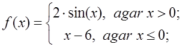
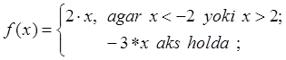
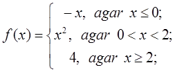
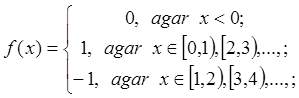

|
Shart operatoriga oid masalalar
if1. Butun son berilgan. Agar, berilgan son musbat bo`lsa, 1 ga oshirilsin, aks holda o`zgartirilmasin. Hosil bo`lgan sonni ekranga chiqaruvchi programma tuzilsin.
if2. Butun son berilgan. Agar, berilgan son musbat bo`lsa, 1 ga oshiring, aks holda 2 ga kamaytiring. Hosil bo`lgan sonni ekranga chiqaruvchi programma tuzilsin.
if3. Butun son berilgan. Agar, berilgan son musbat bo`lsa, 1 ga oshiring, agar manfiy bo`lsa 2 ga kamaytiring. Agar 0 ga teng bo`lsa, 10 ni o`zlashtirsin. Hosil bo`lgan sonni ekranga chiqaruvchi programma tuzilsin.
if4. Uchta butun son berilgan. Shu sonlar orasidan nechta musbat son borligini aniqlovchi programma tuzilsin.
if5. Uchta butun son berilgan. Shu sonlar orasidan nechta musbat va manfiy son borligini aniqlovchi programma tuzilsin.
if6. Ikkita butun son berilgan. Shu sonlarning kattasini aniqlovchi programma tuzilsin.
if7. Ikkita butun son berilgan. Shu sonlarning kichigini tartib raqamini aniqlovchi programma tuzilsin.
if8. Ikkita butun son berilgan. Shu sonlarning avval kattasini keyin kichigini ekranga chiqaruvchi programma tuzilsin.
if9. A va B haqiqiy sonlari beringan. Shu sonlarni shunday o’zgartirish kerakki, A son kichik B son katta bo`lsin. A va B ning qiymati ekranga chiqarilsin.
if10. A va B butun sonlari berilgan. Agar o`zgaruvchilar o`zaro teng bo`lmasa, A va B o`zgaruvchilari ularning yig`indisini o`zlashtirsin. Agar teng bo`lsa, 0 ni o`zlashtirsin. A va B ning qiymati ekranga chiqarilsin.
if11. A va B butun sonlari berilgan. Agar o`zgaruvchilar o`zaro teng bo`lmasa, A va B bu sonlarning kattasini o`zlashtirsin. Agar teng bo`lsa, 0 ni o`zlashtirsin. A va B ning qiymati ekranga chiqarilsin.
if12. Uchta son berilgan. Shu sonlarni kichigini aniqlovchi programma tuzilsin.
if13. Uchta son berilgan. Shu sonlarni o`ratachasi (ya’ni katta va kichik sonlar orasidagi son) ni aniqlovchi programma tuzilsin.
if14. Uchta son berilgan. Shu sonlarni avval kichigini keyin kattasini ekranga chiqaruvchi programma tuzilsin.
if15. Uchta son berilgan. Shu sonlarning yig`indisi eng katta bo’ladigan ikkitasini ekranga chiqaruvchi programma tuzilsin.
if16. A, B, C haqiqiy sonlari berilgan. Agar berilgan sonlar o`sish tartibida berilgan bo`lsa, sonlarni ikkilantiring, aks holda sonlarni ishorasi o’zgartirilsin. A, B, C ning qiymatlari ekranga chiqarilsin.
if17. A, B, C haqiqiy sonlari berilgan. Agar berilgan sonlar o`sish yoki kamayish tartibida berilgan bo`lsa, sonlarni ikkilantiring, aks holda sonlarni ishorasi o’zgartirilsin. A, B, C ning qiymatlari ekranga chiqarilsin.
if18. Uchta butun son berilgan. Shu sonlarni ikkitasi o`zaro teng, qolgan bittasini tartib raqami aniqlansin.
if19. To`rtta butun son berilgan. Shu sonlarni uchtasi o`zaro teng, qolgan bittasini tartib raqami aniqlansin.
if20. Sonlar o`qida uchta A, B, C nuqtalar berilgan. A nuqtaga eng yaqin nuqta va ular orasidagi masofa topilsin.
if21. Koordinatalar tekisligida butun son berilgan. Agar nuqta koordinata boshida yotsa, 0 chiqarilsin. Agar nuqta OX yoki OY o`qlarida joylashsa mos holda 1 va 2 chiqarilsin. Agar nuqta koordinata o`qida joylashmasa 3 chiqarilsin.
if22. OX va OY koordinata o`qlarida yotmaydigan nuqta berilgan. Nuqta joylashgan koordinata choragi aniqlansin.
if23. Koordinata o`qlariga parallel ravishda to`g`ri to`rtburchakning uchta uchi berilgan, to’rtinchi uchi koordinatasini aniqlansin.
if24. X haqiqiy soni berilgan. Quyidagi funksiya hisoblansin.

if25. X haqiqiy soni berilgan. Quyidagi funksiya hisoblansin.

if26. X haqiqiy soni berilgan. Quyidagi funksiya hisoblansin.

if27. X haqiqiy soni berilgan. Quyidagi funksiya hisoblansin.

if28. Yil berilgan (musbat butun son). Berilgan yilda nechta kun borligini aniqlovchi programma tuzilsin. Kabisa yilida 366 kun bor, kabisa bo’lmagan yilda 365 kun bor. Kabisa yil deb 4 ga karrali yillarga aytiladi. Lekin 100 ga karrali yillar ichida faqat 400 ga karrali bo’lganlari kabisa yil hisoblanadi. Masalan 300, 1300 va 1900 kabisa yili emas. 1200 va 2000 kabisa yili.
if29. Butun son berilgan. Berilgan sonni “musbat toq son”, “manfiy juft son”, “son nolga teng” va x.k. ekranga yozadigan programma tuzilsin.
if30. 1-999 oraliqdagi sonlar berilgan. Berilgan sonni “ikki xonali juft son”, “uch xonali toq son” va x.k. ekranga yozadigan programma tuzilsin.
|